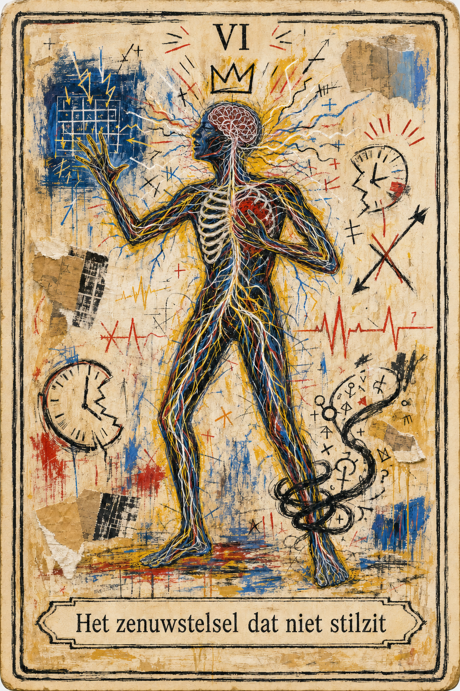

Het zenuwstelsel dat niet stilzit

De dag voor dit schrijven had ik drie dagen lang eindeloos gecodeerd. En ik gebruik het woord endeloos bewust: het voelde letterlijk alsof er geen begin en einde meer was. Ik was hypergeconcentreerd, gedreven, en had maar één doel: bouwen. Bouwen aan een website, een droom, een plek op het internet — maar misschien ook aan mezelf. Elke pauze voelde als een verstoring van een heilige missie. Slapen deed ik wanneer de laptop dichtklapte, ontwaken was gewoon opnieuw klikken op dat verdomde icoontje. Achteraf gezien waren het drie productieve dagen, dagen waar ik best trots op mag zijn. Maar op de laatste dag gebeurde iets onverwachts — iets wat op het moment zelf irritant en onverklaarbaar leek, maar achteraf gezien onvermijdelijk was. Ik neem je even mee in een emotionele hersenspinsel, een innerlijke monoloog, die uiteindelijk uitmondde in een diepe realisatie. Eentje waarvan ik voelde: deze moet gedeeld worden.
De wandeling en de eenzaamheid
Tijdens de avondwandeling met mijn hond, Delta — onze laatste plasronde van de dag — werd ik plots overspoeld door een gevoel van eenzaamheid. Geen klassieke “niemand snapt mij”-eenzaamheid, maar iets lichamelijks. Iets wat zich stil had genesteld in mijn buik en daar bleef knagen.
Ik dacht aan de voorbije dagen. Aan hoe ik doorgegaan was. En ineens voelde ik: straks moet ik weer alleen eten.
Over Leven of Overleven
Vroeger kon ik dit soort emoties makkelijk ontwijken. Gsm open, dopamine erop. Gedachten aan de kant. Weg ermee.
Maar sinds ik ontslag nam en meer vrije dagen heb, heb ik een stil pact gesloten met mezelf: ik wil leren voelen. Echt zijn met wat er is, ook als dat ongemakkelijk is.
Dus nam ik mezelf op. Ja, letterlijk. Ik spreek dan in de dictafoon van mijn gsm. Dat helpt me landen. De woorden kwamen, de tranen ook. Maar echt snappen wat er gebeurde, deed ik nog niet meteen.
En toch wist ik: dit moment is waardevol. Want het kwam niet ondanks die productieve dagen — het kwam door die dagen.
Overlevingsautonomie
Eenzaamheid is voor mij geen onbekende. Ik ken haar fluisterende stem van vroeger. Als kind voelde ik mij vaak alleen — niet per se fysiek, maar emotioneel. Mijn omgeving was er, maar niet altijd aanwezig. En in dat vacuüm van aandacht, leerde ik mezelf reguleren. Of beter gezegd: overleven.
“Als ik eerlijk ben, heb ik nooit echt geleerd hoe je je aan iemand hecht zonder jezelf kwijt te raken.”
Ik vermoed dat het daar begon — bij de manier waarop ik geleerd heb te hechten. Vermijdend, noemen ze dat. Niet uit onwil, maar uit noodzaak. Als het niet veilig is om te voelen, dan leer je jezelf overslaan. Dan wordt autonomie geen keuze, maar een muur.
Die autonomie is een wolf in schaapskleren. Onafhankelijk, ja, maar ook afgesloten. Sterk, ja, maar vaak alleen.
Een plek zoeken, of er één worden?
Die avond viel er iets in mij samen: ik ben niet eenzaam door gebrek aan mensen. Ik ben eenzaam omdat ik mezelf nog niet volledig durf binnen te laten. Mijn verlangens, mijn rusteloosheid, mijn diepe leegte.
“Hoe kan ík een plek zijn?”
Geen façade maar fundament. Geen vluchtplek maar een thuisplek.
Landen in mezelf
Een plek zijn betekent: niet vluchten. Niet in werk, niet in gedachten, niet in productiviteit, niet in relaties. Een plek zijn betekent: blijven. Hier. In dit lijf.
Ik heb een zenuwstelsel dat overuren draait. Altijd alert, altijd voorbereid. Zelfs als er niets is. Zelfs als ik veilig ben.
Een lichaam in overdrive
Tijdens mijn studententijd wou ik me laten labelen. “ADHD.” Dat zou verklaren waarom ik zo snel afdwaalde tijdens het studeren en mijn lichaam niet kon controleren.
“Einstein zei dat tijd relatief is. Voor mij ook: een uur studeren voelt als drie, drie uur scrollen als vijf minuten.”
Mijn moeder weigerde medicatie. Toen vond ik dat lastig. Nu ben ik dankbaar. Want misschien was mijn brein gewoon bezig met overleven.
Het beestje bij zijn naam noemen
Wat als we ADHD zien als een intelligent zenuwstelsel dat zich aanpast aan een wereld die te veel, te snel, te onveilig is?
A Deeply Disoriented Healer.
Niet als diagnose. Niet als sluitende verklaring. Wel als een landkaart waarop ik eindelijk iets van mezelf herkende.
Ik wilde geen excuus. Ik wilde begrijpen waarom mijn motor soms niet start en op andere momenten geen uitknop meer lijkt te hebben. Waarom ik uren kan verdwijnen in iets wat mij grijpt, terwijl kleine, eenvoudige dingen aanvoelen alsof ik er een berg voor moet beklimmen.
De rekening van de rush
Die drie dagen coderen voelden krachtig. Alsof alles plots samenviel: mijn ideeën, mijn snelheid, mijn koppigheid, mijn vermogen om een volledige wereld te bouwen vanuit een leeg scherm.
Maar een kracht die je niet kunt neerleggen, is niet alleen een kracht.
Op een bepaald moment was ik niet meer aan het kiezen om door te gaan. Ik ging gewoon door. Mijn lichaam gaf signalen, maar ik behandelde ze als vervelende meldingen die ik kon wegklikken. Eten werd een onderbreking. Slapen werd tijdverlies. Contact werd iets voor later.
Productiviteit kan er indrukwekkend uitzien. Ze kan ook een bijzonder geloofwaardige vermomming van verdwijnen zijn.
De eenzaamheid tijdens die wandeling kwam dus niet uit het niets. Ze was de rekening. Drie dagen lang had ik mezelf verlaten om iets op te bouwen. Toen de vaart minderde, stond mijn lichaam daar nog. Met honger. Met vermoeidheid. Met het verlangen dat iemand zou merken dat ik terug was.
Geleende drive
Maar als ik eerlijk wil zijn, ontbreekt er nog iets in dit verhaal.
Die drie dagen waren niet nuchter.
Ik zou ze kunnen beschrijven als hyperfocus. Als scheppingsdrang. Als mijn zenuwstelsel dat opnieuw weigerde te stoppen. Dat is allemaal waar, maar het is niet de hele waarheid.
Er zat ook een substantie in de kamer.
Brandstof. Geleende drive.
Ik vind het moeilijk om dat op te schrijven. Omdat ik bang ben dat alles wat ik in die drie dagen maakte daardoor plots minder van mij wordt. Alsof de gedachten niet meer tellen zodra ik vertel wat me hielp om ze zonder ophouden uit mijn hoofd te trekken.
Maar ik schreef ze.
De substantie heeft niet bedacht wat ik wilde zeggen. Ze heeft de woorden niet geleefd, de verbanden niet gelegd, de pijn niet gedragen. Wat ze wel deed, was mijn stoptekens stiller maken. Honger werd achtergrondruis. Slaap werd tijdverlies. Mijn lichaam werd iets dat later wel aan de beurt zou komen.
Dat is misschien waar mijn verslavingsgevoeligheid zit.
Niet alleen in willen verdwijnen. Soms juist in het tegenovergestelde: eindelijk volledig kunnen verschijnen. Scherp zijn. Snel zijn. Doorgaan zonder frictie. De afstand tussen een gedachte en haar uitvoering voelen verdwijnen.
Ik verlang dan niet alleen naar een middel. Ik verlang naar de versie van mezelf die het mij belooft: wakker, moedig, onvermoeibaar, geniaal misschien zelfs. Iemand die geen toestemming nodig heeft en niet om de vijf minuten struikelt over haar eigen zenuwstelsel.
En precies daarin schuilt het gevaar.
Een middel dat je helpt ontsnappen, herken je misschien nog als vlucht. Een middel dat je laat werken, creëren en presteren, kan zich veel geloofwaardiger voordoen als gereedschap. Als oplossing. Als bewijs dat je eindelijk functioneert.
Gereedschap dat te goed lijkt te werken, leg je moeilijk neer.
Dan komt die zin: Daar ben ik weer. Die chick die haar drive nodig heeft. Mijn brein is gewoon verslaafd.
Maar die zin helpt me niet. Hij doet alsof mijn kwetsbaarheid mijn volledige identiteit is. Alsof dit geen patroon is dat ik kan leren herkennen, maar een vonnis over wie ik ben.
Mijn brein is niet mijn vijand. Het heeft alleen bijzonder snel onthouden waar onmiddellijke focus, opluchting en daadkracht te vinden waren. Het onthoudt de belofte sneller dan de rekening.
En die rekening komt altijd later.
De drive was geleend van morgen: van mijn slaap, mijn eetlust, mijn rust, mijn vermogen om iemand binnen te laten. Drie dagen lang leek ik geen grenzen te hebben. Daarna werd zelfs alleen eten iets waar ik tegenop zag.
Zo ziet mijn lus eruit: onrust, een belofte, focus, grenzeloosheid, uitputting, schaamte — en vervolgens opnieuw verlangen naar iets dat mij uit die uitputting kan trekken.
Ik wil die lus niet verzwijgen. Maar ik wil mezelf er ook niet mee samenvatten.
Eerlijkheid betekent hier twee dingen tegelijk: ik mag de substantie niet romantiseren als de muze achter mijn creativiteit. En ik hoef mezelf niet te reduceren tot die chick die blijkbaar niets zonder chemische hulp kan.
De kracht was van mij. Maar de manier waarop ik haar probeerde vast te houden, was niet vrij.
Misschien is dat de vraag die ik moet leren stellen. Niet: Ben ik weer die verslaafde versie van mezelf? Maar: Welke toestand probeer ik zo wanhopig te bereiken dat ik bereid ben mijn lichaam ervoor achter te laten?
En wat zou ik nodig hebben om daar ook zonder geleende drive dichter bij te komen?
Niet permanent. Niet perfect. Misschien zelfs niet even intens.
Maar wel op een manier waarbij ik mezelf na afloop nog terugvind.
Van hyperfocus naar verdwalen
Hyperfocus klinkt bijna onschuldig. Alsof je gewoon heel geconcentreerd bent. Maar voor mij kan het een tunnel worden waarin alle andere deuren verdwijnen. Ik verlies niet alleen de tijd. Ik verlies het besef dat ik een lichaam heb, dat er andere mensen bestaan en dat stoppen ook een keuze mag zijn.
Ik beslis niet bewust om drie dagen van de wereld te verdwijnen. Het gebeurt in kleine stappen. Nog één aanpassing. Nog één pagina. Nog één probleem oplossen. Tot de nacht ochtend wordt en mijn enthousiasme stilaan de vorm van dwang heeft aangenomen.
De vraag is dus niet of mijn drive echt is. Dat is ze. De vraag is of ik nog kan kiezen wat ik ermee doe.
Een thuis is geen bunker
Ik dacht lang dat een plek zijn betekende dat ik niemand nodig mocht hebben. Dat ik mezelf volledig moest kunnen dragen, troosten en reguleren. Maar dat is geen thuis. Dat is een bunker.
Een thuis heeft muren, maar ook ramen. Het beschermt, maar laat licht binnen. En vooral: het heeft een deur.
Misschien bestaat landen in mezelf er niet uit dat ik alles alleen leer oplossen. Misschien betekent het dat ik iemand durf te bellen vóór ik instort. Dat ik laat weten dat ik al te lang wakker ben. Dat ik samen eet, niet omdat ik niet alleen kan zijn, maar omdat ik niet altijd alleen hóéf te zijn.
Verbondenheid is geen mislukte autonomie. Ze is wat autonomie zacht genoeg maakt om in te wonen.
Blijven zonder mezelf vast te zetten
Blijven klinkt groot, maar misschien zit het in kleine dingen. Water drinken voordat mijn hoofd erom schreeuwt. Eten terwijl ik nog midden in een idee zit. Met Delta naar buiten gaan en werkelijk merken dat de lucht veranderd is. Stoppen terwijl iets nog niet af is.
Niet als straf. Niet als regime waarmee ik eindelijk een normaal mens moet worden. Eerder als leuningen langs een trap die ik maar al te graag in één sprong neem.
Ik wil het wilde in mij niet temmen tot er niets meer beweegt. Ik wil leren hoe ik het vuur kan bewaren zonder telkens mijn huis in brand te steken.
Vrijheid betekent voor mij niet dat ik nooit meer naar die versnelling verlang. Vrijheid begint wanneer ik het verlangen kan herkennen zonder het onmiddellijk te moeten gehoorzamen. Wanneer ik mijn drive niet hoef uit te roeien, maar haar ook niet langer hoef te voeden met stukken van morgen.
Het zenuwstelsel dat niet stilzit
Misschien zal mijn zenuwstelsel nooit stil zijn op de manier waarop ik vroeger hoopte. Misschien blijft het sneller associëren, verder springen, gevaar zoeken waar rust ligt en mogelijkheden zien waar anderen alleen een leeg scherm zien.
Ik hoef dat niet langer volledig te verheerlijken of te veroordelen. Ik mag onder de indruk zijn van wat het kan bouwen én eerlijk zijn over wat het mij kost.
Genezen betekent voor mij misschien niet dat ik nooit meer verdwijn. Het betekent dat ik de weg terug steeds vroeger herken. Dat ik niet pas naar mezelf luister wanneer mijn lichaam mij huilend tijdens een hondenwandeling tot stilstand brengt.
Ik hoef geen zenuwstelsel te krijgen dat eindelijk stilzit. Ik wil een leven bouwen waarin het niet meer hoeft te schreeuwen om gehoord te worden.

Wil je reageren? Deel je stem in het forum.